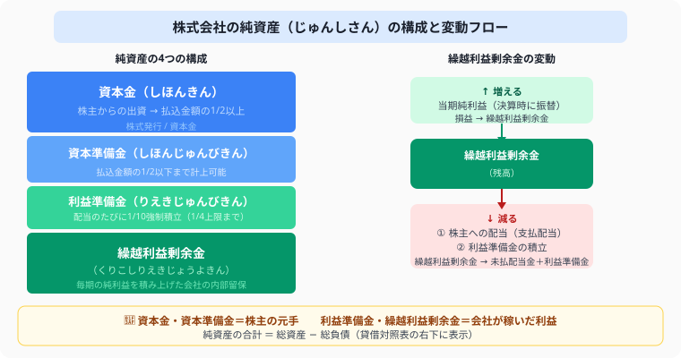

株式会社の仕訳を完全解説
株式発行・剰余金の配当・利益準備金を例題3パターンで解説【日商簿記3級】
- 株式発行——払込金額の1/2以下を資本準備金、残りを資本金に計上（問題文の指示に従う）
- 剰余金の配当——繰越利益剰余金を減らし、配当金＋利益準備金の積立を同時に処理
- 利益準備金の積立額——配当額×1/10（上限：資本金×1/4 − 準備金合計）
- 当期純利益は決算時に損益勘定から繰越利益剰余金へ振り替える
こんにちは、大谷です！実は、初めて簿記で「株式会社の取引」を習ったとき、資本金・資本準備金・利益準備金・繰越利益剰余金と、漢字だらけで名前の似た科目が一気に押し寄せてきて、「うわっ、なんじゃこりゃ……！」と脳内が完全にパニックになりました（笑）。
でも実は、この単元は「外からの元手（株主が入れてくれたお金）」と「中での稼ぎ（会社が自分で稼いだお金）」の2グループに分ければ、一瞬でスッキリ整理できるゲームだったんです。資本金・資本準備金は元手グループ、利益準備金・繰越利益剰余金は稼ぎグループ——この2択さえ意識すれば、どの科目がどう動くかが手に取るようにわかるようになります。当時の僕と同じようにパニックになっている皆さんに、この裏技をそのままお届けします！
また、僕のモチベーション維持のために、記事の末尾のほうにある【いいねボタン】をポチッと押してもらえると、めちゃくちゃ嬉しいです！
株式会社では、株式を発行して資金を集め、利益を株主に配当します。簿記3級では株式発行・剰余金の配当・利益準備金の積立の3つの処理を押さえれば十分です。
🏢 ① 純資産の構成を把握する——資本金・資本準備金・繰越利益剰余金・利益準備金の違い

図解の左側を見てください。純資産は大きく「株主の元手（資本金・資本準備金）」と「会社が稼いだ利益（利益準備金・繰越利益剰余金）」の2グループに分かれます。右側のフローの通り、繰越利益剰余金は毎期の純利益で増え、配当や積立で減ります——この増減の流れが株式会社の仕訳の核心です。
株式会社の純資産は主に3つで構成されます。
配当や利益準備金の積立では「繰越利益剰余金」を減らします。増減の仕訳をしっかり覚えましょう。
📝 ② 株式を発行したときの仕訳——払込金額の1/2以下を資本準備金、残りを資本金へ
会社設立時や増資時に株式を発行し、株主から出資金を受け取ります。会社法の規定により、払込金額の1/2以上を資本金、残りを資本準備金に計上します。問題文で指示がなければ全額資本金とします。
会社設立にあたり、株式100株を1株 ¥1,000 で発行し、全額を当座預金に入金した。
株式100株を1株 ¥1,000 で発行し、全額を当座預金に入金した。払込金額の1/2を資本金、残りを資本準備金とする。
（資本金：100,000 × 1/2 ＝ 50,000 資本準備金：残り50,000）
問題文に「払込金額の1/2を資本金、残りを資本準備金とする」などの指示がある場合はその通りに分けます。指示がない場合は全額を資本金として処理します（払込金額の1/2以上が資本金になるというルール）。
💰 ③ 剰余金の配当と利益準備金の積立——配当のたびに10分の1を強制積立する理由
株主総会で配当が承認されると、繰越利益剰余金を減らして「未払配当金（負債）」と「利益準備金」に振り替えます。
利益準備金の積立額の計算ルール——「配当額×1/10」と上限額の求め方
会社法では、配当するたびに配当額の1/10を利益準備金として積み立てることが義務づけられています。ただし、資本金の1/4に達したら積立不要です。
株主総会で繰越利益剰余金から ¥500,000 の配当を行うことが承認された。利益準備金の積立額は配当額の1/10とする。
（利益準備金：500,000 × 1/10 ＝ 50,000 / 繰越利益剰余金：500,000 ＋ 50,000 ＝ 550,000）
株主総会で承認されたとき → 「未払配当金」（負債）を立てる
実際に支払ったとき → 「未払配当金」を取り崩す
📊 ④ 当期純利益の振替（決算整理）——損益勘定から繰越利益剰余金へ振り替える仕訳
決算で当期純利益が確定すると、損益勘定から繰越利益剰余金へ振り替えます。
当期純利益 ¥800,000 を損益勘定から繰越利益剰余金に振り替えた。
当期純損失のときは逆になります。
🔄 ⑤ 繰越利益剰余金の増減フロー——増える場面・減る場面を整理する
繰越利益剰余金は当期純利益の振替で増加し、配当・利益準備金の積立で減少します。
この残高がB/Sの純資産の部に計上されます。利益準備金は資本金の1/4に達するまで配当のたびに積立義務があります（積立額は配当金の1/10）。
⚠️ ⑥ よくある間違い——株式会社の仕訳で混乱しやすいポイントと対処法
① 株式発行で全額資本金にしてしまう（資本準備金指示があるのに）
誤：当座預金100,000 ／ 資本金100,000
正：当座預金100,000 ／ 資本金50,000・資本準備金50,000
② 中間納付を「法人税等（費用）」で計上してしまう
誤：法人税等60,000 ／ 現金60,000
正：仮払法人税等60,000（資産）／ 現金60,000
（確定前なので費用計上はまだ早い！）
③ 当期純損失のとき振替仕訳の向きを間違える
誤：損益 ／ 繰越利益剰余金
正：繰越利益剰余金 ／ 損益
（損失のとき繰越利益剰余金が減る）
株式会社の取引は、「外からの元手」か「中での稼ぎ」かを見分けるだけのシンプルなパズルです。この記事が少しでも「あ、そういうことか！」につながったら、僕の執筆のモチベーション維持のために、この下にある【いいねボタン】をポチッと押してもらえると、めちゃくちゃ嬉しいです！
よくある質問
株式発行時の資本金はいくらになるの？
問題文の指示によって異なります。「払込金額の1/2を資本金、残りを資本準備金とする」という指示があればその通りに分けます。指示がない場合は払込金額の全額を資本金として処理します。例えば100株を@1,000円で発行した場合、指示なしなら資本金100,000円・資本準備金0円です。
配当するたびに利益準備金を積み立てる必要があるの？
会社法の規定により、配当するたびに配当額の1/10を利益準備金として積み立てる義務があります。ただし、利益準備金と資本準備金の合計が資本金の1/4に達したら、それ以上の積立義務はなくなります。3級の試験では「資本金の1/4に達するまで配当の1/10を積み立てる」という計算が頻出です。
繰越利益剰余金が増えるのはいつ・減るのはいつ？
繰越利益剰余金は、決算で当期純利益が確定したときに「損益 ／ 繰越利益剰余金」の仕訳で増加します。一方、株主総会で配当と利益準備金の積立が承認されたときに「繰越利益剰余金 ／ 未払配当金・利益準備金」の仕訳で減少します。当期純損失の場合は逆仕訳（繰越利益剰余金 ／ 損益）で減少します。